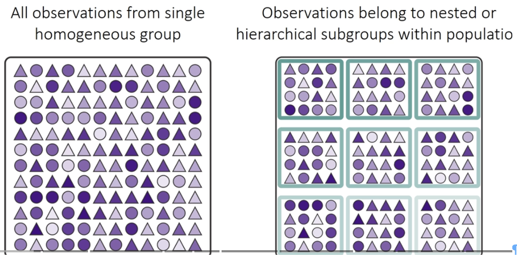
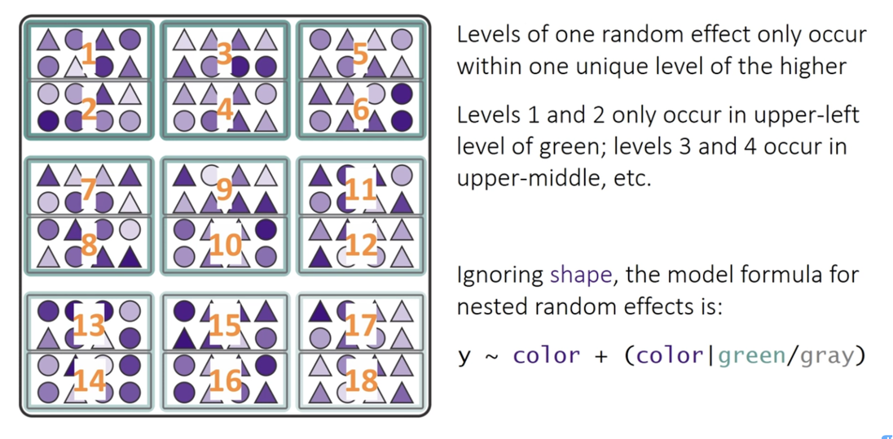

# A tibble: 4 × 7
treat n mean sd se min max
<fct> <int> <dbl> <dbl> <dbl> <dbl> <dbl>
1 none 20 39.2 28.7 6.41 0 83
2 low 20 21.6 25.1 5.62 0 79
3 medium 20 19 25.7 5.74 0 71
4 high 20 1.3 3.18 0.711 0 13Nested / Multifactor ANOVA
Nested designs
Mixed Model ANOVA with random effects
- BOBYQA (Bound Optimization BY Quadratic Approximation)
- optimization algorithm used in mixed-effects modeling
- finds the best parameter values that maximize the likelihood function
- especially useful when fitting complex models
- So the way to code
- fixed effects is to put in the variable name
- random effects can be coded in a range of ways
- samples within a larger grouping - treatment and subsample…

- RANDOM INTERCEPT - FIXED SLOPE -
+ (1|random)- so color ~ fixed + (1|group)
- RANDOM INTERCEPT - RANDOM SLOPE -
+ (fixed|random)- so color ~ fixed + (fixed|group)
- equivalent to
algae ~ treat + (1 + fixed | random)
- Nested Design - such that a sample can exist only within a larger grouping

- RANDOM INTERCEPT - FIXED SLOPE -
y ~ color + (1|green_box/grey_box) y ~ color + (1 | greenbox) + (1 | green_box:grey_box). It models random variation in the intercept for each patch, and also for each quadrat within each patch- RANDOM INTERCEPT - RANDOM SLOPE
y ~ color + (color|green_box/grey_box)
- RANDOM INTERCEPT - FIXED SLOPE -
- Fully crossed design

- crossed design random intercept and random slope
- y ~ color + (1 | green_box) + (1 | gray_box)
- crossed design random intercept and random slope
y~ color + (color|green_box) + (color|gray_box)(color | green_box)is shorthand for(1 + color | green_box). This part of the formula specifies a random intercept and a random slope for thecolorvariable within the levels ofgreen_box.(color | gray_box)is shorthand for(1 + color | gray_box). Similarly, this specifies a random intercept and a random slope forcolorwithin the levels ofgray_box
- crossed design random intercept and random slope

Linear mixed model fit by REML. t-tests use Satterthwaite's method [
lmerModLmerTest]
Formula: algae ~ treat + (1 | patch)
Data: u_df
Control: lmerControl(calc.derivs = FALSE)
REML criterion at convergence: 682.2
Scaled residuals:
Min 1Q Median 3Q Max
-1.9808 -0.3106 -0.1093 0.2831 2.5910
Random effects:
Groups Name Variance Std.Dev.
patch (Intercept) 294.3 17.16
Residual 298.6 17.28
Number of obs: 80, groups: patch, 16
Fixed effects:
Estimate Std. Error df t value Pr(>|t|)
(Intercept) 39.200 9.408 12.000 4.167 0.00131 **
treatlow -17.650 13.305 12.000 -1.327 0.20934
treatmedium -20.200 13.305 12.000 -1.518 0.15485
treathigh -37.900 13.305 12.000 -2.849 0.01466 *
---
Signif. codes: 0 '***' 0.001 '**' 0.01 '*' 0.05 '.' 0.1 ' ' 1
Correlation of Fixed Effects:
(Intr) tretlw trtmdm
treatlow -0.707
treatmedium -0.707 0.500
treathigh -0.707 0.500 0.500